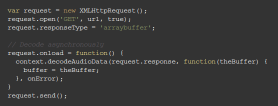
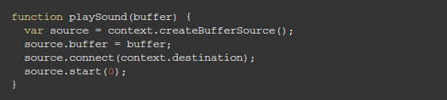

Modular Routing


Types of Nodes
- Source Nodes
- Modification Nodes
- Analysis Nodes
- Destination Node
Example 
Effects
- Filtering
- Delay
- Compression
- Panning
- Waveshaping
- Convolution / Reverb
Uses
- Gaming
- Recording
- Application UX Feedback
- Instrument Tuning
- Musical Apps
Demo
Thank You for your patience